import torch
import torchvision
from fastai.data.all import *
import matplotlib.pyplot as plt기계학습 (1012) 6주차
딥러닝 기초
깊은신경망
깊은신경망(2)– 시벤코정리, 신경망의표현, CPU vs GPU, 확률적경사하강법, 오버피팅
강의영상
https://youtube.com/playlist?list=PLQqh36zP38-yluLUEx5N4yvd5ES7sXu2z
imports
import graphviz
def gv(s): return graphviz.Source('digraph G{ rankdir="LR"'+s + '; }');시벤코정리
지난시간 논리전개
- 아이디어: linear -> relu -> linear (-> sigmoid) 조합으로 꺽은선으로 표현되는 underlying 을 표현할 수 있었다.
- 아이디어의 실용성: 실제자료에서 꺽은선으로 표현되는 underlying은 몇개 없을 것 같음. 그건 맞는데 꺽이는 점을 많이 설정하면 얼추 비슷하게는 “근사” 시킬 수 있음.
- 아이디어의 확장성: 이러한 논리전개는 X:(n,2)인 경우도 가능했음. (이 경우 꺽인선은 꺽인평면이 된다)
- 아이디어에 해당하는 용어정리: 이 구조가 x->y 로 바로 가는 것이 아니라 x->(u1->v1)->(u2->v2)=y 의 구조인데 이러한 네트워크를 하나의 은닉층을 포함하는 네트워크라고 표현한다. (이 용어는 이따가..)
시벤코정리
universal approximation thm: (범용근사정리,보편근사정리,시벤코정리), 1989
하나의 은닉층을 가지는 “linear -> sigmoid -> linear” 꼴의 네트워크를 이용하여 세상에 존재하는 모든 (다차원) 연속함수를 원하는 정확도로 근사시킬 수 있다. (계수를 잘 추정한다면)
- 사실 엄청 이해안되는 정리임. 왜냐햐면,
- 그렇게 잘 맞추면 1989년에 세상의 모든 문제를 다 풀어야 한거 아니야?
- 요즘은 “linear -> sigmoid -> linear” 가 아니라 “linear -> relu -> linear” 조합으로 많이 쓰던데?
- 요즘은 하나의 은닉층을 포함하는 네트워크는 잘 안쓰지 않나? 은닉층이 여러개일수록 좋다고 어디서 본 것 같은데?
- 약간의 의구심이 있지만 아무튼 universal approximation thm에 따르면 우리는 아래와 같은 무기를 가진 꼴이 된다.
- 우리의 무기: \({\bf X}: (n,p)\) 꼴의 입력에서 \({\bf y}:(n,1)\) 꼴의 출력으로 향하는 맵핑을 “linear -> relu -> linear”와 같은 네트워크를 이용해서 “근사”시킬 수 있다.
시벤코정리 proof
그림으로 보는 증명과정
- 데이터
x = torch.linspace(-10,10,200).reshape(-1,1)- 아래와 같은 네트워크를 고려하자.
l1 = torch.nn.Linear(in_features=1,out_features=2)
a1 = torch.nn.Sigmoid()
l2 = torch.nn.Linear(in_features=2,out_features=1)- 직관1: \(l_1\),\(l_2\)의 가중치를 잘 결합하다보면 우연히 아래와 같이 만들 수 있다.
l1.weight.data = torch.tensor([[-5.00],[5.00]])
l1.bias.data = torch.tensor([+10.00,+10.00])l2.weight.data = torch.tensor([[1.00,1.00]])
l2.bias.data = torch.tensor([-1.00])fig,ax = plt.subplots(1,3,figsize=(9,3))
ax[0].plot(x,l1(x).data); ax[0].set_title('$l_1(x)$')
ax[1].plot(x,a1(l1(x)).data); ax[1].set_title('$(a_1 \circ l_1)(x)$')
ax[2].plot(x,l2(a1(l1(x))).data,color='C2'); ax[2].set_title('$(l_2 \circ a_1 \circ \l_1)(x)$') #모자의 시프팅(왼족아래쪽이동), 모자높이 이동 (1->2...)Text(0.5, 1.0, '$(l_2 \\circ a_1 \\circ \\l_1)(x)$')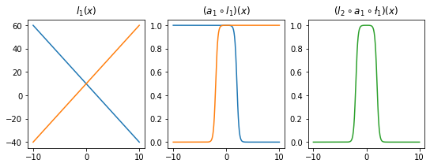
- 직관2: 아래들도 가능할듯?
l1.weight.data = torch.tensor([[-5.00],[5.00]])
l1.bias.data = torch.tensor([+0.00,+20.00])
l2.weight.data = torch.tensor([[1.00,1.00]])
l2.bias.data = torch.tensor([-1.00])
fig,ax = plt.subplots(1,3,figsize=(9,3))
ax[0].plot(x,l1(x).data,'--',color='C0'); ax[0].set_title('$l_1(x)$')
ax[1].plot(x,a1(l1(x)).data,'--',color='C0'); ax[1].set_title('$(a_1 \circ l_1)(x)$')
ax[2].plot(x,l2(a1(l1(x))).data,'--',color='C0'); ax[2].set_title('$(l_2 \circ a_1 \circ \l_1)(x)$');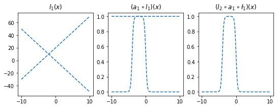
l1.weight.data = torch.tensor([[-5.00],[5.00]])
l1.bias.data = torch.tensor([+20.00,+0.00])
l2.weight.data = torch.tensor([[2.50,2.50]])
l2.bias.data = torch.tensor([-2.50])
ax[0].plot(x,l1(x).data,'--',color='C1'); ax[0].set_title('$l_1(x)$')
ax[1].plot(x,a1(l1(x)).data,'--',color='C1'); ax[1].set_title('$(a_1 \circ l_1)(x)$')
ax[2].plot(x,l2(a1(l1(x))).data,'--',color='C1'); ax[2].set_title('$(l_2 \circ a_1 \circ \l_1)(x)$');
fig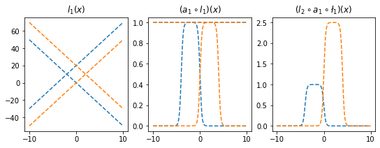
- 은닉층의노드수=4로 하고 적당한 가중치를 조정하면 \((l_2\circ a_1 \circ l_1)(x)\)의 결과로 주황색선 + 파란색선도 가능할 것 같다. \(\to\) 실제로 가능함
l1 = torch.nn.Linear(in_features=1,out_features=4)
a1 = torch.nn.Sigmoid()
l2 = torch.nn.Linear(in_features=4,out_features=1)l1.weight.data = torch.tensor([[-5.00],[5.00],[-5.00],[5.00]])
l1.bias.data = torch.tensor([0.00, 20.00, 20.00, 0])
l2.weight.data = torch.tensor([[1.00, 1.00, 2.50, 2.50]])
l2.bias.data = torch.tensor([-1.0-2.5])plt.plot(l2(a1(l1(x))).data)
- 2개의 시그모이드를 우연히 잘 결합하면 아래와 같은 함수 \(h\)를 만들 수 있다.
h = lambda x: torch.sigmoid(200*(x+0.5))+torch.sigmoid(-200*(x-0.5))-1.0plt.plot(x,h(x))
plt.title("$h(x)$")Text(0.5, 1.0, '$h(x)$')
- 위와 같은 함수 \(h\)를 활성화함수로 하고 \(m\)개의 노드를 가지는 은닉층을 생각해보자. 이러한 은닉층을 사용한다면 전체 네트워크를 아래와 같이 표현할 수 있다.
\(\underset{(n,1)}{\bf X} \overset{l_1}{\to} \underset{(n,m)}{\boldsymbol u^{(1)}} \overset{h}{\to} \underset{(n,m)}{\boldsymbol v^{(1)}} \overset{l_2}{\to} \underset{(n,1)}{\hat{\boldsymbol y}}\)
그리고 위의 네트워크와 동일한 효과를 주는 아래의 네트워크가 항상 존재함.
\(\underset{(n,1)}{\bf X} \overset{l_1}{\to} \underset{(n,2m)}{\boldsymbol u^{(1)}} \overset{sig}{\to} \underset{(n,2m)}{\boldsymbol v^{(1)}} \overset{l_2}{\to} \underset{(n,1)}{\hat{\boldsymbol y}}\)
- \(h(x)\)를 활성화함수로 가지는 네트워크를 설계하여 보자.
class MyActivation(torch.nn.Module): ## 사용자정의 활성화함수를 선언하는 방법
def __init__(self):
super().__init__()
def forward(self, input): #forward: x에서 y로가는거..
return h(input) # activation 의 출력 a1=MyActivation()
# a1 = torch.nn.Sigmoid(), a1 = torch.nn.ReLU() 대신에 a1 = MyActivation()plt.plot(x,a1(x)) 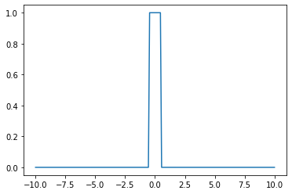
히든레이어가 1개의 노드를 가지는 경우
torch.manual_seed(43052)
fig, ax = plt.subplots(4,4,figsize=(12,12))
for i in range(4):
for j in range(4):
net = torch.nn.Sequential(
torch.nn.Linear(1,1),
MyActivation(),
torch.nn.Linear(1,1)
)
ax[i,j].plot(x,net(x).data,'--')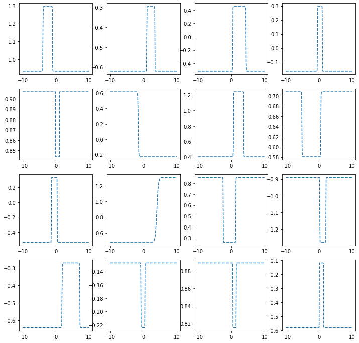
히든레이어가 2개의 노드를 가지는 경우
torch.manual_seed(43052)
fig, ax = plt.subplots(4,4,figsize=(12,12))
for i in range(4):
for j in range(4):
net = torch.nn.Sequential(
torch.nn.Linear(1,2),
MyActivation(),
torch.nn.Linear(2,1)
)
ax[i,j].plot(x,net(x).data,'--')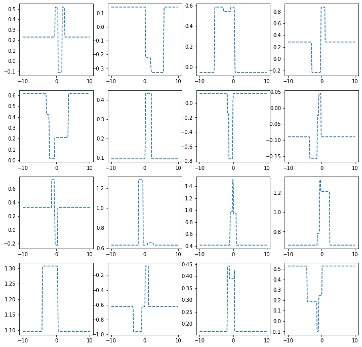
히든레이어가 3개의 노드를 가지는 경우
torch.manual_seed(43052)
fig, ax = plt.subplots(4,4,figsize=(12,12))
for i in range(4):
for j in range(4):
net = torch.nn.Sequential(
torch.nn.Linear(1,3),
MyActivation(),
torch.nn.Linear(3,1)
)
ax[i,j].plot(x,net(x).data,'--')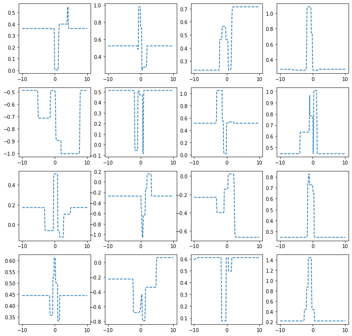
히든레이어가 1024개의 노드를 가지는 경우
torch.manual_seed(43052)
fig, ax = plt.subplots(4,4,figsize=(12,12))
for i in range(4):
for j in range(4):
net = torch.nn.Sequential(
torch.nn.Linear(1,1024),
MyActivation(),
torch.nn.Linear(1024,1)
)
ax[i,j].plot(x,net(x).data,'--')
시벤코정리 활용
- 아래와 같이 하나의 은닉층을 가지고 있더라도 많은 노드수만 보장되면 매우 충분한 표현력을 가짐
\(\underset{(n,1)}{\bf X} \overset{l_1}{\to} \underset{(n,m)}{\boldsymbol u^{(1)}} \overset{h}{\to} \underset{(n,m)}{\boldsymbol v^{(1)}} \overset{l_2}{\to} \underset{(n,1)}{\hat{\boldsymbol y}}\)
예제1 (sin, exp)
torch.manual_seed(43052)
x = torch.linspace(-10,10,200).reshape(-1,1)
underlying = torch.sin(2*x) + torch.sin(0.5*x) + torch.exp(-0.2*x)
eps = torch.randn(200).reshape(-1,1)*0.1 #오차항
y = underlying + eps
plt.plot(x,y,'o',alpha=0.5)
plt.plot(x,underlying,lw=3)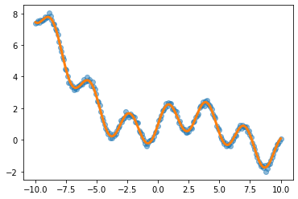
h = lambda x: torch.sigmoid(200*(x+0.5))+torch.sigmoid(-200*(x-0.5))-1.0
class MyActivation(torch.nn.Module): ## 사용자정의 활성화함수를 선언하는 방법
def __init__(self):
super().__init__()
def forward(self, input):
return h(input) net= torch.nn.Sequential(
torch.nn.Linear(1,2048),
MyActivation(),
torch.nn.Linear(2048,1)
)
loss_fn = torch.nn.MSELoss()
optimizr = torch.optim.Adam(net.parameters()) for epoc in range(200):
## 1
yhat = net(x)
## 2
loss = loss_fn(yhat,y)
## 3
loss.backward()
## 4
optimizr.step()
optimizr.zero_grad()plt.plot(x,y,'o',alpha=0.2)
plt.plot(x,underlying,lw=3)
plt.plot(x,net(x).data,'--')
예제2 (스펙높아도 취업X)
df=pd.read_csv('https://raw.githubusercontent.com/guebin/DL2022/master/_notebooks/2022-10-04-dnnex0.csv')
df| x | underlying | y | |
|---|---|---|---|
| 0 | -1.000000 | 0.000045 | 0.0 |
| 1 | -0.998999 | 0.000046 | 0.0 |
| 2 | -0.997999 | 0.000047 | 0.0 |
| 3 | -0.996998 | 0.000047 | 0.0 |
| 4 | -0.995998 | 0.000048 | 0.0 |
| ... | ... | ... | ... |
| 1995 | 0.995998 | 0.505002 | 0.0 |
| 1996 | 0.996998 | 0.503752 | 0.0 |
| 1997 | 0.997999 | 0.502501 | 0.0 |
| 1998 | 0.998999 | 0.501251 | 1.0 |
| 1999 | 1.000000 | 0.500000 | 1.0 |
2000 rows × 3 columns
x = torch.tensor(df.x).reshape(-1,1).float()
y = torch.tensor(df.y).reshape(-1,1).float()
plt.plot(x,y,'o',alpha=0.1)
plt.plot(df.x,df.underlying,lw=3)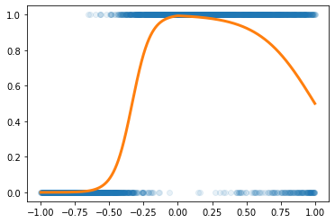
h = lambda x: torch.sigmoid(200*(x+0.5))+torch.sigmoid(-200*(x-0.5))-1.0
class MyActivation(torch.nn.Module): ## 사용자정의 활성화함수를 선언하는 방법
def __init__(self):
super().__init__()
def forward(self, input):
return h(input) torch.manual_seed(43052)
net= torch.nn.Sequential(
torch.nn.Linear(1,2048),
MyActivation(),
torch.nn.Linear(2048,1),
torch.nn.Sigmoid()
)
loss_fn = torch.nn.BCELoss()
optimizr = torch.optim.Adam(net.parameters()) for epoc in range(100):
## 1
yhat = net(x)
## 2
loss = loss_fn(yhat,y)
## 3
loss.backward()
## 4
optimizr.step()
optimizr.zero_grad()plt.plot(x,y,'o',alpha=0.2)
plt.plot(df.x,df.underlying,lw=3)
plt.plot(x,net(x).data,'--')
예제3 (MNIST data with DNN)
# 예비학습
(예비학습1) Path
path = untar_data(URLs.MNIST)
pathPath('/home/cgb4/.fastai/data/mnist_png')- path 도 오브젝트임
- path 도 정보+기능이 있음
- path의 정보
path._str # 숨겨놓았네? #path도 object 동작을 정의하는 기능이 있을거야..
#path 오브젝트에 저장된 정보(attribute, 기능은 method)'/home/cgb4/.fastai/data/mnist_png'- 기능1
path.ls() # path 오브젝트의 안에 있는 목록(폴더)를 보여줘!(#2) [Path('/home/cgb4/.fastai/data/mnist_png/training'),Path('/home/cgb4/.fastai/data/mnist_png/testing')]- 기능2
path/'training' #경로를 결합Path('/home/cgb4/.fastai/data/mnist_png/training')path/'testing'Path('/home/cgb4/.fastai/data/mnist_png/testing')- 기능1과 기능2의 결합
(path/'training/3').ls()(#6131) [Path('/home/cgb4/.fastai/data/mnist_png/training/3/37912.png'),Path('/home/cgb4/.fastai/data/mnist_png/training/3/12933.png'),Path('/home/cgb4/.fastai/data/mnist_png/training/3/3576.png'),Path('/home/cgb4/.fastai/data/mnist_png/training/3/59955.png'),Path('/home/cgb4/.fastai/data/mnist_png/training/3/23144.png'),Path('/home/cgb4/.fastai/data/mnist_png/training/3/40836.png'),Path('/home/cgb4/.fastai/data/mnist_png/training/3/25536.png'),Path('/home/cgb4/.fastai/data/mnist_png/training/3/42669.png'),Path('/home/cgb4/.fastai/data/mnist_png/training/3/7046.png'),Path('/home/cgb4/.fastai/data/mnist_png/training/3/47380.png')...]- ‘/home/cgb4/.fastai/data/mnist_png/training/3/37912.png’ 이 파일을 더블클릭하면 이미지가 보인단 말임
(예비학습2) plt.imshow
# plt.imshow 값에 따라 밝게 어둡게 보여줌imgtsr = torch.tensor([[1.0,2],[2.0,4.0]])
imgtsrtensor([[1., 2.],
[2., 4.]])plt.imshow(imgtsr,cmap='gray')
plt.colorbar()<matplotlib.colorbar.Colorbar at 0x7fceac108e50>
(예비학습3) torchvision
- ’/home/cgb4/.fastai/data/mnist_png/training/3/37912.png’의 이미지파일을 torchvision.io.read_image 를 이용하여 텐서로 만듬
#!s /home/cgb4/.fastai/data/mnist_png/training/3
#ls아닌가? 뭐지imgtsr = torchvision.io.read_image('/home/cgb4/.fastai/data/mnist_png/training/3/37912.png')
imgtsrtensor([[[ 0, 0, 0, 0, 0, 0, 0, 0, 0, 0, 0, 0, 0, 0,
0, 0, 0, 0, 0, 0, 0, 0, 0, 0, 0, 0, 0, 0],
[ 0, 0, 0, 0, 0, 0, 0, 0, 0, 0, 0, 0, 0, 0,
0, 0, 0, 0, 0, 0, 0, 0, 0, 0, 0, 0, 0, 0],
[ 0, 0, 0, 0, 0, 0, 0, 0, 0, 0, 0, 0, 0, 0,
0, 0, 0, 0, 0, 0, 0, 0, 0, 0, 0, 0, 0, 0],
[ 0, 0, 0, 0, 0, 0, 0, 0, 0, 0, 0, 0, 0, 0,
0, 0, 0, 0, 0, 0, 0, 0, 0, 0, 0, 0, 0, 0],
[ 0, 0, 0, 0, 0, 0, 0, 0, 0, 0, 0, 0, 0, 0,
0, 0, 0, 0, 0, 0, 0, 0, 0, 0, 0, 0, 0, 0],
[ 0, 0, 0, 0, 0, 0, 0, 0, 0, 0, 0, 17, 66, 138,
149, 180, 138, 138, 86, 0, 0, 0, 0, 0, 0, 0, 0, 0],
[ 0, 0, 0, 0, 0, 0, 0, 0, 22, 162, 161, 228, 252, 252,
253, 252, 252, 252, 252, 74, 0, 0, 0, 0, 0, 0, 0, 0],
[ 0, 0, 0, 0, 0, 0, 0, 0, 116, 253, 252, 252, 252, 189,
184, 110, 119, 252, 252, 32, 0, 0, 0, 0, 0, 0, 0, 0],
[ 0, 0, 0, 0, 0, 0, 0, 0, 74, 161, 160, 77, 45, 4,
0, 0, 70, 252, 210, 0, 0, 0, 0, 0, 0, 0, 0, 0],
[ 0, 0, 0, 0, 0, 0, 0, 0, 0, 0, 0, 0, 0, 0,
0, 22, 205, 252, 32, 0, 0, 0, 0, 0, 0, 0, 0, 0],
[ 0, 0, 0, 0, 0, 0, 0, 0, 0, 0, 0, 0, 0, 0,
0, 162, 253, 245, 21, 0, 0, 0, 0, 0, 0, 0, 0, 0],
[ 0, 0, 0, 0, 0, 0, 0, 0, 0, 0, 0, 0, 0, 0,
36, 219, 252, 139, 0, 0, 0, 0, 0, 0, 0, 0, 0, 0],
[ 0, 0, 0, 0, 0, 0, 0, 0, 0, 0, 0, 0, 0, 0,
222, 252, 202, 13, 0, 0, 0, 0, 0, 0, 0, 0, 0, 0],
[ 0, 0, 0, 0, 0, 0, 0, 0, 0, 0, 0, 0, 0, 43,
253, 252, 89, 0, 0, 0, 0, 0, 0, 0, 0, 0, 0, 0],
[ 0, 0, 0, 0, 0, 0, 0, 0, 0, 0, 0, 0, 85, 240,
253, 157, 6, 0, 0, 0, 0, 0, 0, 0, 0, 0, 0, 0],
[ 0, 0, 0, 0, 0, 0, 0, 0, 0, 0, 0, 7, 160, 253,
231, 42, 0, 0, 0, 0, 0, 0, 0, 0, 0, 0, 0, 0],
[ 0, 0, 0, 0, 0, 0, 0, 0, 0, 0, 0, 142, 252, 252,
42, 30, 78, 161, 36, 0, 0, 0, 0, 0, 0, 0, 0, 0],
[ 0, 0, 0, 0, 0, 0, 0, 0, 0, 0, 0, 184, 252, 252,
185, 228, 252, 252, 168, 0, 0, 0, 0, 0, 0, 0, 0, 0],
[ 0, 0, 0, 0, 0, 0, 0, 0, 0, 0, 0, 184, 252, 252,
253, 252, 252, 252, 116, 0, 0, 0, 0, 0, 0, 0, 0, 0],
[ 0, 0, 0, 0, 0, 0, 0, 0, 0, 0, 0, 101, 179, 252,
253, 252, 252, 210, 12, 0, 0, 0, 0, 0, 0, 0, 0, 0],
[ 0, 0, 0, 0, 0, 0, 0, 0, 0, 0, 0, 0, 0, 22,
255, 253, 215, 21, 0, 0, 0, 0, 0, 0, 0, 0, 0, 0],
[ 0, 0, 0, 0, 0, 0, 0, 0, 0, 0, 0, 34, 89, 244,
253, 223, 98, 0, 0, 0, 0, 0, 0, 0, 0, 0, 0, 0],
[ 0, 0, 0, 0, 0, 0, 0, 0, 116, 123, 142, 234, 252, 252,
184, 67, 0, 0, 0, 0, 0, 0, 0, 0, 0, 0, 0, 0],
[ 0, 0, 0, 0, 0, 0, 0, 0, 230, 253, 252, 252, 252, 168,
0, 0, 0, 0, 0, 0, 0, 0, 0, 0, 0, 0, 0, 0],
[ 0, 0, 0, 0, 0, 0, 0, 0, 126, 253, 252, 168, 43, 2,
0, 0, 0, 0, 0, 0, 0, 0, 0, 0, 0, 0, 0, 0],
[ 0, 0, 0, 0, 0, 0, 0, 0, 0, 0, 0, 0, 0, 0,
0, 0, 0, 0, 0, 0, 0, 0, 0, 0, 0, 0, 0, 0],
[ 0, 0, 0, 0, 0, 0, 0, 0, 0, 0, 0, 0, 0, 0,
0, 0, 0, 0, 0, 0, 0, 0, 0, 0, 0, 0, 0, 0],
[ 0, 0, 0, 0, 0, 0, 0, 0, 0, 0, 0, 0, 0, 0,
0, 0, 0, 0, 0, 0, 0, 0, 0, 0, 0, 0, 0, 0]]],
dtype=torch.uint8)- 이 텐서는 (1,28,28)의 shape을 가짐
imgtsr.shapetorch.Size([1, 28, 28])# 1: 채널의 숫자, 28*28은 픽셀의 숫자- imgtsr를 plt.imshow 로 시각화
plt.imshow(imgtsr.reshape(28,28),cmap='gray')<matplotlib.image.AxesImage at 0x7fceabd49a90>
- 진짜 숫자3이 있음
# 데이터정리
- 데이터정리
threes = (path/'training/3').ls() #6131개, 1,28,28
sevens = (path/'training/7').ls() #6265개, 1,28,28
len(threes),len(sevens)(6131, 6265)X3 = torch.stack([torchvision.io.read_image(str(threes[i])) for i in range(6131)]) #리스트 형태로 만들고..
X7 = torch.stack([torchvision.io.read_image(str(sevens[i])) for i in range(6265)])# X3 = torch.stack([torchvision.io.read_image(str(fn)])) for i in three_fnames])
# X7 = torch.stack([torchvision.io.read_image(str(fn)])) for i in seven_fnames])
# 위와 같은 코드X3.shape,X7.shape(torch.Size([6131, 1, 28, 28]), torch.Size([6265, 1, 28, 28]))X=torch.concat([X3,X7]) #n * p 의 shape
#float로 바꿔줘야함
X.shapetorch.Size([12396, 1, 28, 28])Xnp = X.reshape(-1,1*28*28).float()
Xnp.shapetorch.Size([12396, 784])y = torch.tensor([0.0]*6131 + [1.0]*6265).reshape(-1,1) # 3을 0으로 7을 1로.. 나중에 sigmoin하기 편하게 하려고 6131대신에 len(X3)이렇게 써도 됨
y.shapetorch.Size([12396, 1])plt.plot(y,'o')
- “y=0”은 숫자3을 의미, “y=1”은 숫자7을 의미
- 숫자3은 6131개, 숫자7은 6265개 있음
# 학습
- 네트워크의 설계
torch.manual_seed(43052)
net = torch.nn.Sequential( #묶어주기..
torch.nn.Linear(in_features=1*28*28,out_features=30),
torch.nn.ReLU(),
torch.nn.Linear(in_features=30,out_features=1),
torch.nn.Sigmoid()
)- \(\underset{(n,784)}{\bf X} \overset{l_1}{\to} \underset{(n,30)}{\boldsymbol u^{(1)}} \overset{a_1}{\to} \underset{(n,30)}{\boldsymbol v^{(1)}} \overset{l_1}{\to} \underset{(n,1)}{\boldsymbol u^{(2)}} \overset{a_2}{\to} \underset{(n,1)}{\boldsymbol v^{(2)}}=\underset{(n,1)}{\hat{\boldsymbol y}}\)
loss_fn = torch.nn.BCELoss()optimizr = torch.optim.Adam(net.parameters())for epoc in range(200):
## 1
yhat = net(Xnp)
## 2
loss = loss_fn(yhat,y)
## 3
loss.backward()
## 4
optimizr.step()
optimizr.zero_grad()plt.plot(y,'o')
plt.plot(net(Xnp).data,'.',alpha=0.2)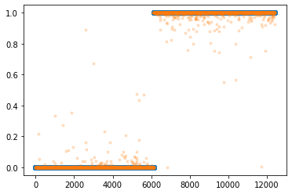
- 대부분 잘 적합되었음
신경망의 표현 (\({\boldsymbol x} \to \hat{\boldsymbol y}\) 로 가는 과정을 그림으로 표현)
예제1: \(\underset{(n,1)}{\bf X} \overset{l_1}{\to} \underset{(n,1)}{\boldsymbol u^{(1)}} \overset{sig}{\to} \underset{(n,1)}{\boldsymbol v^{(1)}} =\underset{(n,1)}{\hat{\boldsymbol y}}\)
- 모든 observation과 가중치를 명시한 버전
(표현1)
Code
gv('''
"1" -> "ŵ₀ + xₙ*ŵ₁, bias=False"[label="* ŵ₀"]
"xₙ" -> "ŵ₀ + xₙ*ŵ₁, bias=False"[label="* ŵ₁"]
"ŵ₀ + xₙ*ŵ₁, bias=False" -> "ŷₙ"[label="sigmoid"]
"." -> "...................................."[label="* ŵ₀"]
".." -> "...................................."[label="* ŵ₁"]
"...................................." -> "..."[label=" "]
"1 " -> "ŵ₀ + x₂*ŵ₁, bias=False"[label="* ŵ₀"]
"x₂" -> "ŵ₀ + x₂*ŵ₁, bias=False"[label="* ŵ₁"]
"ŵ₀ + x₂*ŵ₁, bias=False" -> "ŷ₂"[label="sigmoid"]
"1 " -> "ŵ₀ + x₁*ŵ₁, bias=False"[label="* ŵ₀"]
"x₁" -> "ŵ₀ + x₁*ŵ₁, bias=False"[label="* ŵ₁"]
"ŵ₀ + x₁*ŵ₁, bias=False" -> "ŷ₁"[label="sigmoid"]
''')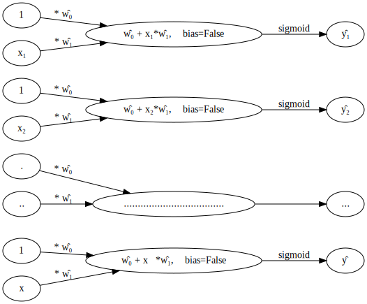
- 단점: 똑같은 그림의 반복이 너무 많음
- observation 반복을 생략한 버전들
(표현2) 모든 \(i\)에 대하여 아래의 그림을 반복한다고 하면 (표현1)과 같다.
Code
gv('''
"1" -> "ŵ₀ + xᵢ*ŵ₁, bias=False"[label="* ŵ₀"]
"xᵢ" -> "ŵ₀ + xᵢ*ŵ₁, bias=False"[label="* ŵ₁"]
"ŵ₀ + xᵢ*ŵ₁, bias=False" -> "ŷᵢ"[label="sigmoid"]
''')
(표현3) 그런데 (표현2)에서 아래와 같이 \(x_i\), \(y_i\) 대신에 간단히 \(x\), \(y\)로 쓰는 경우도 많음
Code
gv('''
"1" -> "ŵ₀ + x*ŵ₁, bias=False"[label="* ŵ₀"]
"x" -> "ŵ₀ + x*ŵ₁, bias=False"[label="* ŵ₁"]
"ŵ₀ + x*ŵ₁, bias=False" -> "ŷ"[label="sigmoid"]
''')
- 1을 생략한 버전들
(표현4) bais=False 대신에 bias=True를 주면 1을 생략할 수 있음
Code
gv('''
"x" -> "x*ŵ₁, bias=True"[label="*ŵ₁"] ;
"x*ŵ₁, bias=True" -> "ŷ"[label="sigmoid"] ''')
(표현4의 수정) \(\hat{w}_1\)대신에 \(\hat{w}\)를 쓰는 것이 더 자연스러움
Code
gv('''
"x" -> "x*ŵ, bias=True"[label="*ŵ"] ;
"x*ŵ, bias=True" -> "ŷ"[label="sigmoid"] ''')
(표현5) 선형변환의 결과는 아래와 같이 \(u\)로 표현하기도 한다.
Code
gv('''
"x" -> "u";
"u" -> "y"[label="sigmoid"] ''')
다이어그램은 그리는 사람의 취향에 따라 그리는 방법이 조금씩 다릅니다. 즉 교재마다 달라요.
예제2: \(\underset{(n,1)}{\bf X} \overset{l_1}{\to} \underset{(n,2)}{\boldsymbol u^{(1)}} \overset{relu}{\to} \underset{(n,2)}{\boldsymbol v^{(1)}} \overset{l_2}{\to} \underset{(n,1)}{\boldsymbol u^{(2)}} \overset{sig}{\to} \underset{(n,1)}{\boldsymbol v^{(2)}} =\underset{(n,1)}{\hat{\boldsymbol y}}\)
참고: 코드로 표현
torch.nn.Sequential(
torch.nn.Linear(in_features=1,out_features=2),
torch.nn.ReLU(),
torch.nn.Linear(in_features=2,out_features=1),
torch.nn.Sigmoid()
)- 이해를 위해서 10월4일 강의노트에서 다루었던 아래의 상황을 고려하자.

(강의노트의 표현)
Code
gv('''
"x" -> " -x"[label="*(-1)"];
"x" -> " x"[label="*1"]
" x" -> "rlu(x)"[label="relu"]
" -x" -> "rlu(-x)"[label="relu"]
"rlu(x)" -> "u"[label="*(-4.5)"]
"rlu(-x)" -> "u"[label="*(-9.0)"]
"u" -> "sig(u)=yhat"[label="sig"]
'''
)
(좀 더 일반화된 표현) 10월4일 강의노트 상황을 일반화하면 아래와 같다.
Code
gv('''
"x" -> "u1[:,0]"[label="*(-1)"];
"x" -> "u1[:,1]"[label="*1"]
"u1[:,0]" -> "v1[:,0]"[label="relu"]
"u1[:,1]" -> "v1[:,1]"[label="relu"]
"v1[:,0]" -> "u2"[label="*(-9.0)"]
"v1[:,1]" -> "u2"[label="*(-4.5)"]
"u2" -> "v2=yhat"[label="sig"]
'''
)
* Layer의 개념: \({\bf X}\)에서 \(\hat{\boldsymbol y}\)로 가는 과정은 “선형변환+비선형변환”이 반복되는 구조이다. “선형변환+비선형변환”을 하나의 세트로 보면 아래와 같이 표현할 수 있다.
\(\underset{(n,1)}{\bf X} \overset{l_1}{\to} \left( \underset{(n,2)}{\boldsymbol u^{(1)}} \overset{relu}{\to} \underset{(n,2)}{\boldsymbol v^{(1)}} \right) \overset{l_2}{\to} \left(\underset{(n,1)}{\boldsymbol u^{(2)}} \overset{sig}{\to} \underset{(n,1)}{\boldsymbol v^{(2)}}\right), \quad \underset{(n,1)}{\boldsymbol v^{(2)}}=\underset{(n,1)}{net({\bf X})}=\underset{(n,1)}{\hat{\boldsymbol y}}\)
이것을 다이어그램으로 표현한다면 아래와 같다.
(선형+비선형을 하나의 Layer로 묶은 표현)
Code
gv('''
subgraph cluster_1{
style=filled;
color=lightgrey;
"X"
label = "Layer 0"
}
subgraph cluster_2{
style=filled;
color=lightgrey;
"X" -> "u1[:,0]"
"X" -> "u1[:,1]"
"u1[:,0]" -> "v1[:,0]"[label="relu"]
"u1[:,1]" -> "v1[:,1]"[label="relu"]
label = "Layer 1"
}
subgraph cluster_3{
style=filled;
color=lightgrey;
"v1[:,0]" -> "u2"
"v1[:,1]" -> "u2"
"u2" -> "v2=yhat"[label="sigmoid"]
label = "Layer 2"
}
''')
Layer를 세는 방법
- 정석: 학습가능한 파라메터가 몇층으로 있는지…
- 일부 교재 설명: 입력층은 계산하지 않음, activation layer는 계산하지 않음.
- 위의 예제의 경우
number of layer = 2이다.
사실 input layer, activation layer 등의 표현을 자주 사용해서 layer를 세는 방법이 처음에는 헷갈립니다..
Hidden Layer의 수를 세는 방법
Layer의 수 = Hidden Layer의 수 + 출력층의 수 = Hidden Layer의 수 + 1- 위의 예제의 경우
number of hidden layer = 1이다.
* node의 개념: \(u\to v\)로 가는 쌍을 간단히 노드라는 개념을 이용하여 나타낼 수 있음.
(노드의 개념이 포함된 그림)
Code
gv('''
subgraph cluster_1{
style=filled;
color=lightgrey;
"X"
label = "Layer 0"
}
subgraph cluster_2{
style=filled;
color=lightgrey;
"X" -> "node1"
"X" -> "node2"
label = "Layer 1:relu"
}
subgraph cluster_3{
style=filled;
color=lightgrey;
"node1" -> "yhat "
"node2" -> "yhat "
label = "Layer 2:sigmoid"
}
''')
여기에서 node의 숫자 = feature의 숫자와 같이 이해할 수 있다. 즉 아래와 같이 이해할 수 있다.
(“number of nodes = number of features”로 이해한 그림)
Code
gv('''
subgraph cluster_1{
style=filled;
color=lightgrey;
"X"
label = "Layer 0"
}
subgraph cluster_2{
style=filled;
color=lightgrey;
"X" -> "feature1"
"X" -> "feature2"
label = "Layer 1:relu"
}
subgraph cluster_3{
style=filled;
color=lightgrey;
"feature1" -> "yhat "
"feature2" -> "yhat "
label = "Layer 2:sigmoid"
}
''')
다이어그램의 표현방식은 교재마다 달라서 모든 예시를 달달 외울 필요는 없습니다. 다만 임의의 다이어그램을 보고 대응하는 네트워크를 pytorch로 구현하는 능력은 매우 중요합니다.
예제3: \(\underset{(n,784)}{\bf X} \overset{l_1}{\to} \underset{(n,32)}{\boldsymbol u^{(1)}} \overset{relu}{\to} \underset{(n,32)}{\boldsymbol v^{(1)}} \overset{l_1}{\to} \underset{(n,1)}{\boldsymbol u^{(2)}} \overset{sig}{\to} \underset{(n,1)}{\boldsymbol v^{(2)}}=\underset{(n,1)}{\hat{\boldsymbol y}}\)
(다이어그램표현)
Code
gv('''
splines=line
subgraph cluster_1{
style=filled;
color=lightgrey;
"x1"
"x2"
".."
"x784"
label = "Input Layer"
}
subgraph cluster_2{
style=filled;
color=lightgrey;
"x1" -> "node1"
"x2" -> "node1"
".." -> "node1"
"x784" -> "node1"
"x1" -> "node2"
"x2" -> "node2"
".." -> "node2"
"x784" -> "node2"
"x1" -> "..."
"x2" -> "..."
".." -> "..."
"x784" -> "..."
"x1" -> "node32"
"x2" -> "node32"
".." -> "node32"
"x784" -> "node32"
label = "Hidden Layer: relu"
}
subgraph cluster_3{
style=filled;
color=lightgrey;
"node1" -> "yhat"
"node2" -> "yhat"
"..." -> "yhat"
"node32" -> "yhat"
label = "Outplut Layer: sigmoid"
}
''')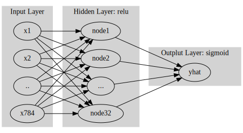
- Layer0,1,2 대신에 Input Layer, Hidden Layer, Output Layer로 표현함
- 위의 다이어그램에 대응하는 코드
net = torch.nn.Sequential(
torch.nn.Linear(in_features=28*28*1,out_features=32),
torch.nn.ReLU(),
torch.nn.Linear(in_features=32,out_features=1),
torch.nn.Sigmoid()
)CPU vs GPU
- 파이토치에서 GPU를 쓰는 방법을 알아보자. (사실 지금까지 우리는 CPU만 쓰고 있었음)
GPU 사용방법
- cpu 연산이 가능한 메모리에 데이터 저장
torch.manual_seed(43052)
x_cpu = torch.tensor([0.0,0.1,0.2]).reshape(-1,1) #net에 넣어야니까 shape을 바꿔주기
y_cpu = torch.tensor([0.0,0.2,0.4]).reshape(-1,1)
net_cpu = torch.nn.Linear(1,1) - gpu 연산이 가능한 메모리에 데이터 저장
torch.manual_seed(43052)
x_gpu = x_cpu.to("cuda:0")
y_gpu = y_cpu.to("cuda:0")
net_gpu = torch.nn.Linear(1,1).to("cuda:0") #net_cpu.to("cuda:0") 하게 되면 net_cpu도 gpu로 넘어가게 되므로 그대로 써주면 안뎀 - cpu 혹은 gpu 연산이 가능한 메모리에 저장된 값들을 확인
x_cpu, y_cpu, net_cpu.weight, net_cpu.bias(tensor([[0.0000],
[0.1000],
[0.2000]]),
tensor([[0.0000],
[0.2000],
[0.4000]]),
Parameter containing:
tensor([[-0.3467]], requires_grad=True),
Parameter containing:
tensor([-0.8470], requires_grad=True))x_gpu, y_gpu, net_gpu.weight, net_gpu.bias(tensor([[0.0000],
[0.1000],
[0.2000]], device='cuda:0'),
tensor([[0.0000],
[0.2000],
[0.4000]], device='cuda:0'),
Parameter containing:
tensor([[-0.3467]], device='cuda:0', requires_grad=True),
Parameter containing:
tensor([-0.8470], device='cuda:0', requires_grad=True))- gpu는 gpu끼리 연산가능하고 cpu는 cpu끼리 연산가능함
(예시1)
net_cpu(x_cpu) tensor([[-0.8470],
[-0.8817],
[-0.9164]], grad_fn=<AddmmBackward0>)(예시2)
net_gpu(x_gpu) tensor([[-0.8470],
[-0.8817],
[-0.9164]], device='cuda:0', grad_fn=<AddmmBackward0>)(예시3)
net_cpu(x_gpu) RuntimeError: Expected all tensors to be on the same device, but found at least two devices, cpu and cuda:0! (when checking argument for argument mat1 in method wrapper_addmm)(예시4)
net_gpu(x_cpu)RuntimeError: Expected all tensors to be on the same device, but found at least two devices, cuda:0 and cpu! (when checking argument for argument mat1 in method wrapper_addmm)(예시5)
torch.mean((y_cpu-net_cpu(x_cpu))**2)tensor(1.2068, grad_fn=<MeanBackward0>)(예시6)
torch.mean((y_gpu-net_gpu(x_gpu))**2)tensor(1.2068, device='cuda:0', grad_fn=<MeanBackward0>)(예시7)
torch.mean((y_gpu-net_cpu(x_cpu))**2)RuntimeError: Expected all tensors to be on the same device, but found at least two devices, cuda:0 and cpu!(예시8)
torch.mean((y_cpu-net_gpu(x_gpu))**2)RuntimeError: Expected all tensors to be on the same device, but found at least two devices, cuda:0 and cpu!시간측정 (예비학습)
import time t1 = time.time() #현재시각t2 = time.time()t2-t1 # 현재시간 - 현재시간 : 위아래 실행하는 만큼의 초 나옴 4.9920783042907715CPU (512)
- 데이터준비
torch.manual_seed(5)
x=torch.linspace(0,1,100).reshape(-1,1)
y=torch.randn(100).reshape(-1,1)*0.01- for문 준비
net = torch.nn.Sequential(
torch.nn.Linear(1,512),
torch.nn.ReLU(),
torch.nn.Linear(512,1)
)
loss_fn = torch.nn.MSELoss()
optimizr = torch.optim.Adam(net.parameters())- for문 + 학습시간측정
t1= time.time()
for epoc in range(1000):
## 1
yhat = net(x)
## 2
loss = loss_fn(yhat,y)
## 3
loss.backward()
## 4
optimizr.step()
optimizr.zero_grad()
t2 = time.time()
t2-t10.28586554527282715GPU (512)
- 데이터준비
torch.manual_seed(5)
x=torch.linspace(0,1,100).reshape(-1,1).to("cuda:0")
y=(torch.randn(100).reshape(-1,1)*0.01).to("cuda:0")- for문돌릴준비
net = torch.nn.Sequential(
torch.nn.Linear(1,512),
torch.nn.ReLU(),
torch.nn.Linear(512,1)
).to("cuda:0")
loss_fn = torch.nn.MSELoss()
optimizr = torch.optim.Adam(net.parameters())- for문 + 학습시간측정
t1= time.time()
for epoc in range(1000):
## 1
yhat = net(x)
## 2
loss = loss_fn(yhat,y)
## 3
loss.backward()
## 4
optimizr.step()
optimizr.zero_grad()
t2 = time.time()
t2-t10.5355696678161621- !! CPU가 더 빠르다?
CPU vs GPU (20480)
- CPU (20480)
#은닉충의 노드수: 20480torch.manual_seed(5)
x=torch.linspace(0,1,100).reshape(-1,1)
y=torch.randn(100).reshape(-1,1)*0.01
net = torch.nn.Sequential(
torch.nn.Linear(1,20480),
torch.nn.ReLU(),
torch.nn.Linear(20480,1)
)
loss_fn = torch.nn.MSELoss()
optimizr = torch.optim.Adam(net.parameters())
t1= time.time()
for epoc in range(1000):
## 1
yhat = net(x)
## 2
loss = loss_fn(yhat,y)
## 3
loss.backward()
## 4
optimizr.step()
optimizr.zero_grad()
t2 = time.time()
t2-t12.380666494369507- GPU (20480)
torch.manual_seed(5)
x=torch.linspace(0,1,100).reshape(-1,1).to("cuda:0")
y=(torch.randn(100).reshape(-1,1)*0.01).to("cuda:0")
net = torch.nn.Sequential(
torch.nn.Linear(1,20480),
torch.nn.ReLU(),
torch.nn.Linear(20480,1)
).to("cuda:0")
loss_fn = torch.nn.MSELoss()
optimizr = torch.optim.Adam(net.parameters())
t1= time.time()
for epoc in range(1000):
## 1
yhat = net(x)
## 2
loss = loss_fn(yhat,y)
## 3
loss.backward()
## 4
optimizr.step()
optimizr.zero_grad()
t2 = time.time()
t2-t10.5442469120025635- 왜 이런 차이가 나는가? 연산을 하는 주체는 코어인데 CPU는 수는 적지만 일을 잘하는 코어들을 가지고 있고 GPU는 일은 못하지만 다수의 코어를 가지고 있기 때문
CPU vs GPU (204800)
- CPU (204800)
torch.manual_seed(5)
x=torch.linspace(0,1,100).reshape(-1,1)
y=torch.randn(100).reshape(-1,1)*0.01
net = torch.nn.Sequential(
torch.nn.Linear(1,204800),
torch.nn.ReLU(),
torch.nn.Linear(204800,1)
)
loss_fn = torch.nn.MSELoss()
optimizr = torch.optim.Adam(net.parameters())
t1= time.time()
for epoc in range(1000):
## 1
yhat = net(x)
## 2
loss = loss_fn(yhat,y)
## 3
loss.backward()
## 4
optimizr.step()
optimizr.zero_grad()
t2 = time.time()
t2-t151.95550894737244- GPU (204800)
torch.manual_seed(5)
x=torch.linspace(0,1,100).reshape(-1,1).to("cuda:0")
y=(torch.randn(100).reshape(-1,1)*0.01).to("cuda:0")
net = torch.nn.Sequential(
torch.nn.Linear(1,204800),
torch.nn.ReLU(),
torch.nn.Linear(204800,1)
).to("cuda:0")
loss_fn = torch.nn.MSELoss()
optimizr = torch.optim.Adam(net.parameters())
t1= time.time()
for epoc in range(1000):
## 1
yhat = net(x)
## 2
loss = loss_fn(yhat,y)
## 3
loss.backward()
## 4
optimizr.step()
optimizr.zero_grad()
t2 = time.time()
t2-t11.3824031352996826확률적경사하강법, 배치, 에폭
좀 이상하지 않아요?
- 우리가 쓰는 GPU: 다나와 PC견적 - GPU 메모리 끽해봐야 24GB
- 우리가 분석하는 데이터: 빅데이터..?
- 데이터의 크기가 커지는순간 X.to("cuda:0"), y.to("cuda:0") 쓰면 난리나겠는걸?
x = torch.linspace(-10,10,100000).reshape(-1,1)
eps = torch.randn(100000).reshape(-1,1)
y = x*2 + eps plt.plot(x,y,'o',alpha=0.05)
plt.plot(x,2*x)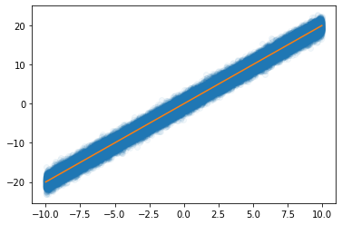
- 데이터를 100개중에 1개만 꼴로만 쓰면 어떨까?
plt.plot(x[::100],y[::100],'o',alpha=0.05)
plt.plot(x,2*x)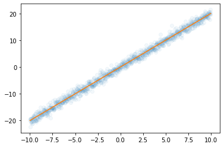
- 대충 이거만 가지고 적합해도 충분히 정확할것 같은데
X,y 데이터를 굳이 모두 GPU에 넘겨야 하는가?
- 데이터셋을 짝홀로 나누어서 번갈아가면서 GPU에 올렸다 내렸다하면 안되나?
- 아래의 알고리즘을 생각해보자.
- 데이터를 반으로 나눈다.
- 짝수obs의 x,y 그리고 net의 모든 파라메터를 GPU에 올린다.
- yhat, loss, grad, update 수행
- 짝수obs의 x,y를 GPU메모리에서 내린다. 그리고 홀수obs의 x,y를 GPU메모리에 올린다.
- yhat, loss, grad, update 수행
- 홀수obs의 x,y를 GPU메모리에서 내린다. 그리고 짝수obs의 x,y를 GPU메모리에 올린다.
- 반복
경사하강법, 확률적경사하강법, 미니배치 경사하강법
10개의 샘플이 있다고 가정. \(\{(x_i,y_i)\}_{i=1}^{10}\)
- ver1: 모든 샘플을 이용하여 slope 계산
(epoch1) \(loss=\sum_{i=1}^{10}(y_i-\beta_0-\beta_1x_i)^2 \to slope \to update\)
(epoch2) \(loss=\sum_{i=1}^{10}(y_i-\beta_0-\beta_1x_i)^2 \to slope \to update\)
…
- ver2: 하나의 샘플만을 이용하여 slope 계산
(epoch1) - \(loss=(y_1-\beta_0-\beta_1x_1)^2 \to slope \to update\) - \(loss=(y_2-\beta_0-\beta_1x_2)^2 \to slope \to update\) - … - \(loss=(y_{10}-\beta_0-\beta_1x_{10})^2 \to slope \to update\)
(epoch2) - \(loss=(y_1-\beta_0-\beta_1x_1)^2 \to slope \to update\) - \(loss=(y_2-\beta_0-\beta_1x_2)^2 \to slope \to update\) - … - \(loss=(y_{10}-\beta_0-\beta_1x_{10})^2 \to slope \to update\)
…
- ver3: \(m (\leq n)\) 개의 샘플을 이용하여 slope 계산
\(m=3\)이라고 하자.
(epoch1) - \(loss=\sum_{i=1}^{3}(y_i-\beta_0-\beta_1x_i)^2 \to slope \to update\) - \(loss=\sum_{i=4}^{6}(y_i-\beta_0-\beta_1x_i)^2 \to slope \to update\) - \(loss=\sum_{i=7}^{9}(y_i-\beta_0-\beta_1x_i)^2 \to slope \to update\) - \(loss=(y_{10}-\beta_0-\beta_1x_{10})^2 \to slope \to update\)
(epoch2) - \(loss=\sum_{i=1}^{3}(y_i-\beta_0-\beta_1x_i)^2 \to slope \to update\) - \(loss=\sum_{i=4}^{6}(y_i-\beta_0-\beta_1x_i)^2 \to slope \to update\) - \(loss=\sum_{i=7}^{9}(y_i-\beta_0-\beta_1x_i)^2 \to slope \to update\) - \(loss=(y_{10}-\beta_0-\beta_1x_{10})^2 \to slope \to update\)
…
용어의 정리
옛날
- ver1: gradient descent, batch gradient descent
- ver2: stochastic gradient descent
- ver3: mini-batch gradient descent, mini-batch stochastic gradient descent
# gpu메모리가 떨어져서 ver1은 못쓴당.. ver2는 불안한 느낌 for문이 너무 많이 돌ㄹ아가->느림..요즘
- ver1: gradient descent
- ver2: stochastic gradient descent with batch size = 1
- ver3: stochastic gradient descent - https://www.deeplearningbook.org/contents/optimization.html, 알고리즘 8-1 참고.
ds, dl
# 데이터셋- ds
x=torch.tensor(range(10)).float()#.reshape(-1,1) reshape원래는 해야는데 보여주기 위해서 생략쓰,,
y=torch.tensor([1.0]*5+[0.0]*5)#.reshape(-1,1)ds=torch.utils.data.TensorDataset(x,y)
ds<torch.utils.data.dataset.TensorDataset at 0x7f62db294710>ds.tensors # 그냥 (x,y)의 튜플(tensor([0., 1., 2., 3., 4., 5., 6., 7., 8., 9.]),
tensor([1., 1., 1., 1., 1., 0., 0., 0., 0., 0.]))# 데이터로더- dl
dl=torch.utils.data.DataLoader(ds,batch_size=3) #batch_size: 3개씩 묶어서 배치를 해줌
#set(dir(dl)) & {'__iter__'}
#dir(dl):숨겨진 습성
#dl.__ : 숨겨진 습성
# iter 오브젝트: for문에 돌릴수 있다는 특성..!for xx,yy in dl: #in 뒤에 iter오브젝트는 다 쓸수 있음
print(xx,yy)tensor([0., 1., 2.]) tensor([1., 1., 1.])
tensor([3., 4., 5.]) tensor([1., 1., 0.])
tensor([6., 7., 8.]) tensor([0., 0., 0.])
tensor([9.]) tensor([0.])ds, dl을 이용한 MNIST 구현
- 데이터정리
path = untar_data(URLs.MNIST)zero_fnames = (path/'training/0').ls()
one_fnames = (path/'training/1').ls()X0 = torch.stack([torchvision.io.read_image(str(zf)) for zf in zero_fnames])
X1 = torch.stack([torchvision.io.read_image(str(of)) for of in one_fnames])
X = torch.concat([X0,X1],axis=0).reshape(-1,1*28*28)/255 #255로나누는 이유 숙제
y = torch.tensor([0.0]*len(X0) + [1.0]*len(X1)).reshape(-1,1)X.shape,y.shape(torch.Size([12665, 784]), torch.Size([12665, 1]))- ds \(\to\) dl
ds = torch.utils.data.TensorDataset(X,y)
dl = torch.utils.data.DataLoader(ds,batch_size=2048) 12665/20486.18408203125i = 0
for xx,yy in dl: # 총 7번 돌아가는 for문
print(i)
i=i+10
1
2
3
4
5
6- 미니배치 안쓰는 학습
torch.manual_seed(43052)
net = torch.nn.Sequential(
torch.nn.Linear(784,32),
torch.nn.ReLU(),
torch.nn.Linear(32,1),
torch.nn.Sigmoid()
)
loss_fn = torch.nn.BCELoss()
optimizr = torch.optim.Adam(net.parameters())for epoc in range(70):
## 1
yhat = net(X)
## 2
loss= loss_fn(yhat,y)
## 3
loss.backward()
## 4
optimizr.step()
optimizr.zero_grad() torch.sum((yhat>0.5) == y) / len(y)
# 분자: 전체 데이터 중 잘 맞춘게 몇개인지.
# 분모: y의 갯수???
# torch.mean((yhat>0.5) == y)*1.0) 계산하면 위와 같음tensor(0.9981)- 미니배치 쓰는 학습 (GPU 올리고 내리는 과정은 생략)
# len(y)/2048 = 6.18408203125
# 1~2048, 2049~ 하면 6번 조금넘게나옴 (7번)torch.manual_seed(43052)
net = torch.nn.Sequential(
torch.nn.Linear(784,32),
torch.nn.ReLU(),
torch.nn.Linear(32,1),
torch.nn.Sigmoid()
)
loss_fn = torch.nn.BCELoss()
optimizr = torch.optim.Adam(net.parameters())for epoc in range(10):
for xx,yy in dl: ## 7번
## 1
#yhat = net(xx)
## 2
loss = loss_fn(net(xx),yy)
## 3
loss.backward()
## 4
optimizr.step()
optimizr.zero_grad()torch.mean(((net(X)>0.5) == y)*1.0)tensor(0.9950)숙제
해설 및 풀이는 아래url참고
https://guebin.github.io/DL2022/posts/2022-10-06-6wk-1.html#%EC%88%99%EC%A0%9C
(1) 숫자0과 숫자1을 구분하는 네트워크를 아래와 같은 구조로 설계하라
\[\underset{(n,784)}{\bf X} \overset{l_1}{\to} \underset{(n,64)}{\boldsymbol u^{(1)}} \overset{a_1}{\to} \underset{(n,64)}{\boldsymbol v^{(1)}} \overset{l_1}{\to} \underset{(n,1)}{\boldsymbol u^{(2)}} \overset{a_2}{\to} \underset{(n,1)}{\boldsymbol v^{(2)}}=\underset{(n,1)}{\hat{\boldsymbol y}}\]
위에서 \(a_1\)은 relu를, \(a_2\)는 sigmoid를 의미한다.
- “y=0”은 숫자0을 의미하도록 하고 “y=1”은 숫자1을 의미하도록 설정하라.
(2) 아래의 지침에 따라 200 epoch 학습을 진행하라.
- 손실함수는 BECLoss를 이용할 것. torch.nn.BCELoss() 를 이용할 것.
- 옵티마이저는 아담으로 설정할 것. 학습률은 lr=0.002로 설정할 것.
(3) 아래의 지침에 따라 200 epoch 학습을 진행하라. 학습이 잘 되는가?
- 손실함수는 BECLoss를 이용할 것. torch.nn.BCELoss()를 사용하지 않고 수식을 직접 입력할 것.
- 옵티마이저는 아담으로 설정할 것. 학습률은 lr=0.002로 설정할 것.
(4) 아래의 지침에 따라 200 epoch 학습을 진행하라. 학습이 잘 되는가?
- 이미지의 값을 0과 1사이로 규격화 하라. (Xnp = Xnp/255 를 이용하세요!)
- 손실함수는 BECLoss를 이용할 것. torch.nn.BCELoss()를 사용하지 않고 수식을 직접 입력할 것.
- 옵티마이저는 아담으로 설정할 것. 학습률은 lr=0.002로 설정할 것.
(5) 아래와 같은 수식을 이용하여 accuracy를 계산하라.
\(\text{accuracy}=\frac{1}{n}\sum_{i=1}^n I(\tilde{y}_i=y_i)\)
- \(\tilde{y}_i = \begin{cases} 1 & \hat{y}_i > 0.5 \\ 0 & \hat{y}_i \leq 0.5 \end{cases}\)
- \(I(\tilde{y}_i=y_i) = \begin{cases} 1 & \tilde{y}_i=y_i \\ 0 & \tilde{y}_i \neq y_i \end{cases}\)
단, \(n\)은 0과 1을 의미하는 이미지의 수